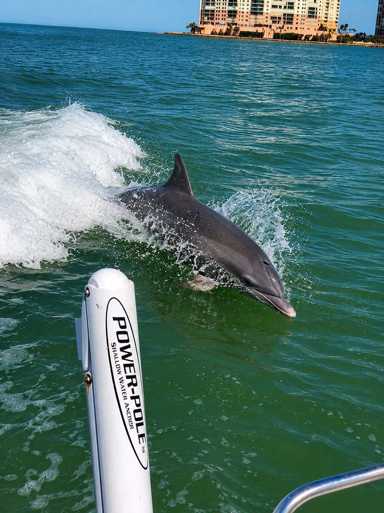
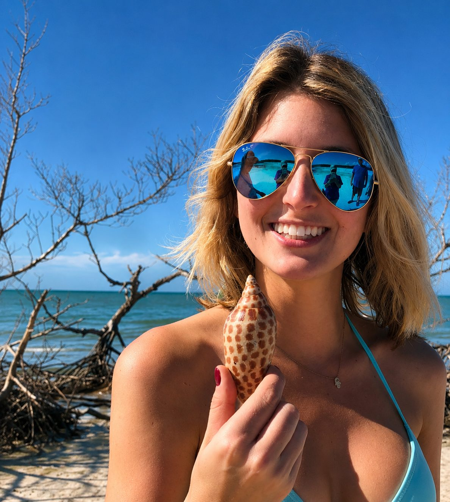
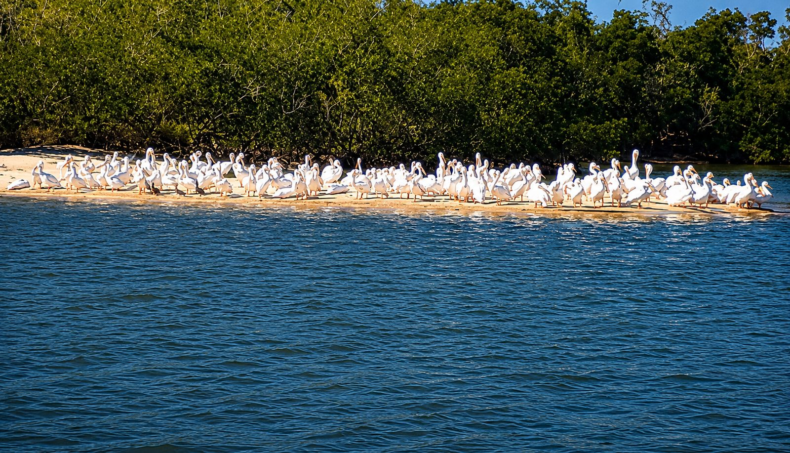
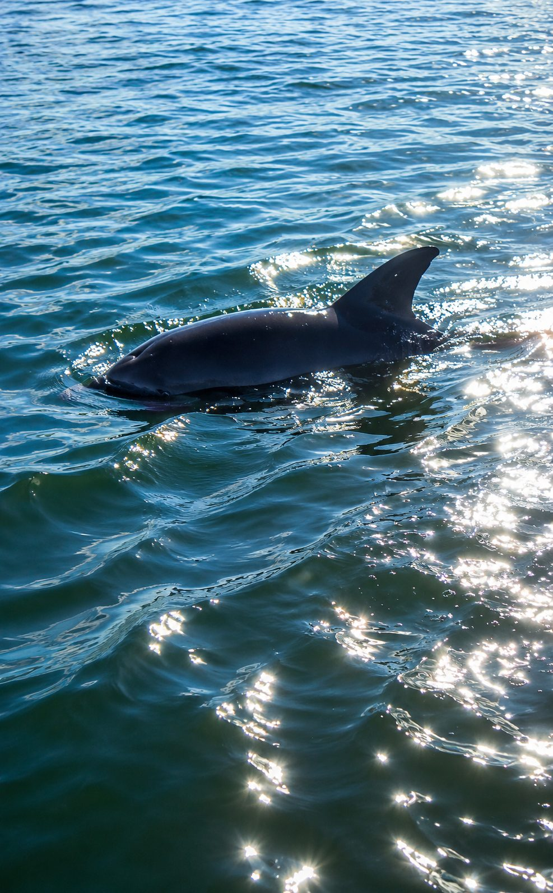
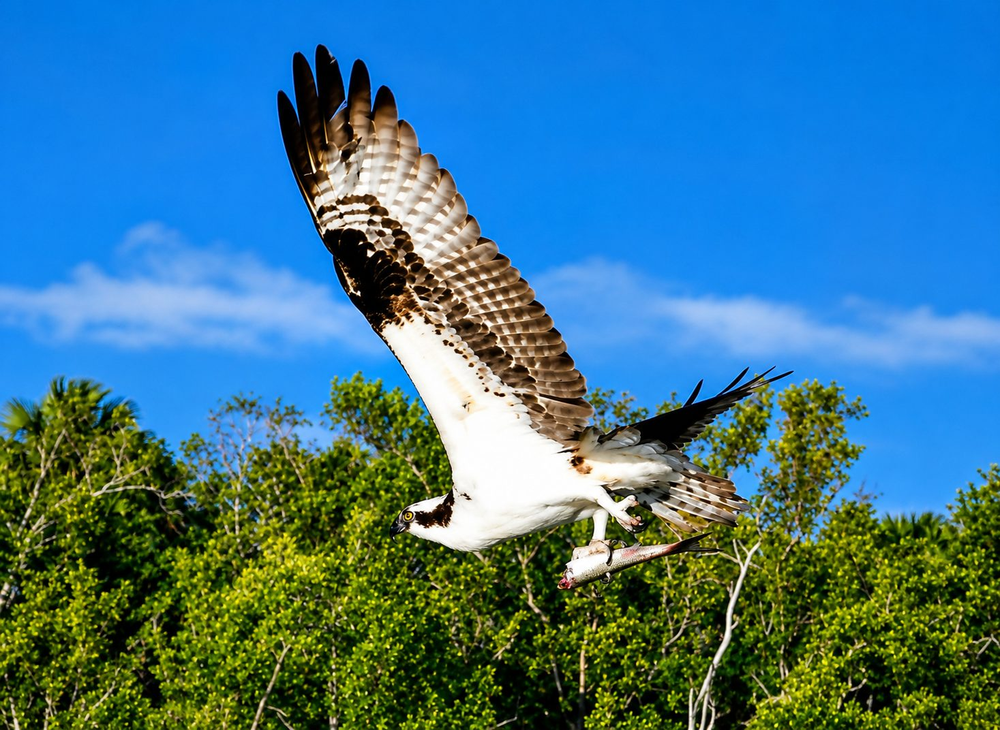
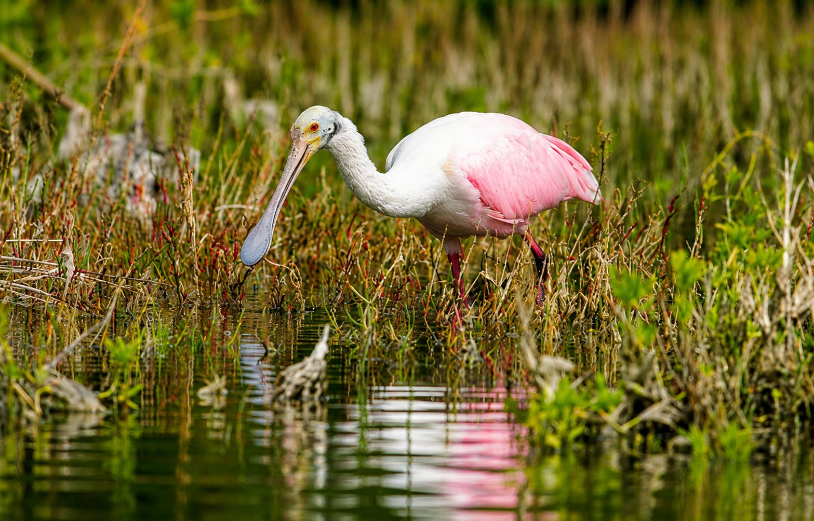

"Best tour we've ever taken. The guide knew everything about every bird we saw. Dolphins came right up to the boat!"
James T.
★★★★★
"Incredible shelling. We found shells we'd never seen before and the naturalist told us all about each one."
Linda K.
★★★★★
"Brought our 4-year-old and she was absolutely mesmerized. Guides were patient, knowledgeable and so much fun."
About This Tour
A Perfect Introduction to the 10,000 Islands
There is no better introduction to Southwest Florida's most extraordinary ecosystem than our Dolphin, Birding & Shelling Tour. In just two hours you will cruise through the 10,000 Islands National Wildlife Refuge — a protected maze of mangrove islands, pristine tidal flats, and open Gulf waters that are accessible only by boat.
Whether you're a first-time visitor to Marco Island or a returning Florida regular, this tour delivers an experience that is genuinely impossible to replicate anywhere else. Our Florida Master Naturalist guides narrate every moment, turning what might be a simple boat ride into a living classroom of ecology, wildlife behavior, and natural history.
Dolphins are spotted on nearly every single departure. The resident bottlenose dolphin population in the 10,000 Islands is one of the most active in all of Florida — and our guides know exactly where to find them. The shelling portion of the tour takes you to pristine barrier island beaches that most visitors never see.
Features
Florida Master Naturalist certified guide
US Coast Guard licensed captain
Dolphin spotting in natural habitat
Shelling on pristine barrier island
Bird identification and narration
Wildlife identification throughout
Small group sizes
Life jackets for all ages provided
Departs from Goodland, FL
All ages welcome from infants up
Educational content for all ages
Photo-friendly — guides help you get the shot

Dolphin Sightings
One of Florida's most active dolphin populations. Sightings on nearly every tour — sometimes just feet from the boat.

World-Class Shelling
Our guides know every productive tidal flat. Bring a bag — you will fill it. Marco Island is one of the top shelling spots in the US.

Exceptional Birding
Roseate spoonbills, bald eagles, osprey, and dozens of rare shorebirds. A Master Naturalist guide brings every sighting to life.
Wildlife & Nature
What Wildlife Will I See on This Tour?
The 10,000 Islands is one of the most biodiverse coastal ecosystems in North America. Here is what guests consistently encounter:
🐬
Bottlenose Dolphins
Resident pods frequently swim alongside the boat and play in the wake. Our guides can identify individual dolphins they've known for years.
🦅
Bald Eagles
Nesting pairs are common throughout the refuge. Our guides know active nesting sites and the best times to spot them.
🦩
Roseate Spoonbills
One of Florida's most iconic birds. Their brilliant pink plumage is unmistakable and a favorite of every guest.
🌊
Manatees
Florida's gentle giants are frequently seen in calm back bays and mangrove channels, especially in cooler months.
🐢
Sea Turtles
Loggerhead and green turtles surface regularly in the open waters of the refuge during warmer months.
🐦
Shorebirds & Waders
Great blue herons, snowy egrets, reddish egrets, black skimmers, willets, and dozens more depending on the season.



Who Is This Tour For?
Who Is This Harbor Cruise Right For?
👨👩👧👦
Families
No better family activity in Marco Island. Children are engaged, educated, and amazed. We've had guests from 18 months to 92 years old.
🏖️
First-Time Visitors
The single best way to experience the real Florida that most tourists never see. An unforgettable introduction to Southwest Florida.
📸
Photographers & Birders
Extraordinary photography opportunities. Our guides position the boat for the best angles and know where every species nests.
Why Choose Us
Why Choose Marco Island Boat Tours
If you're looking for a Marco Island boat tour, you won't find a more knowledgeable or passionate team of guides. Here's what consistently sets us apart:
All guides are formally trained Florida Master Naturalists
25+ years operating in the 10,000 Islands
Featured on PBS, National Geographic & Lonely Planet
Florida SEE certified eco-tour operator
Small group sizes — never overcrowded
US Coast Guard licensed captains on every tour
4.9 stars across 447+ Google reviews
We pick up fishing line on every tour to protect sea turtles
Prepare for Your Tour
Where to Park and What to Bring
Tours depart from 750 Palm Point Dr, Goodland, FL 34140 — a small fishing village just east of Marco Island. Free parking is available at the dock. Please arrive at least 15 minutes before your departure time.
🧴
Sunscreen (reef-safe preferred)
💧
Water and snacks
🧢
Hat and sunglasses
👟
Closed-toe shoes for island walking
📷
Camera — you will want it
🐚
A bag for your shells
🌬️
Light jacket for cool mornings
🚗
Free parking at the dock
FAQ
Harbor Cruise FAQs
We’ve put together a list of common questions about the tour. If you have more questions don’t hesitate to reach out to us.
General FAQs
750 Palm Point Dr, Goodland, FL 34140 — east of Marco Island. Free parking available at the dock. Please arrive 15 minutes before departure.
All guests are welcome. We follow current CDC and local health guidelines to ensure a safe and comfortable experience for everyone on board.
Every tour includes a certified Florida Master Naturalist guide, US Coast Guard licensed captain, life jackets for all ages, and comprehensive wildlife narration throughout.
Full refunds with 48 hours advance notice. Weather-related cancellations are rescheduled at no charge. Call (239) 695-0000 for any changes.
Full payment is collected at time of booking through our secure FareHarbor system. No separate deposit is required.
Ticketed Charters
Starting at $89.95 per adult. Children’s pricing varies. Book online through our FareHarbor system for current availability and exact pricing.
Your Florida Master Naturalist guide leads the boat through the 10,000 Islands, narrating every wildlife sighting, stopping at shelling beaches, and making the experience educational and unforgettable.
We operate in most weather conditions. Severe weather, lightning, or unsafe conditions result in a free reschedule. We monitor forecasts closely before every departure.
You’re welcome to bring your own snacks and non-alcoholic drinks. We strongly recommend bringing plenty of water, especially in warmer months.
Multiple departures available daily. Morning and afternoon options depending on season. Check our online booking for current times and availability.
Refunds
Full refunds are available with 48 hours advance notice. No refunds for same-day cancellations unless due to weather, in which case we reschedule at no charge.
Payment
All major credit and debit cards are accepted through our secure FareHarbor online booking system. Payment is collected at time of booking.